Documento interno · Vendas
Guia da venda
Do anúncio ao primeiro pedido: como o cliente compra, como ele entra no produto, como você cobra e como testar tudo antes de vender.
bistroconnect.com.brOutubro de 2026
Do anúncio ao primeiro pedido: como o cliente compra, como ele entra no produto, como você cobra e como testar tudo antes de vender.
Leia na ordem na primeira vez. Depois use como consulta.
Abra bistroconnect.com.br/painel/ e toque em Ver demonstração com dados fictícios. Faça o mesmo em /crm/. Para testar de verdade, siga o capítulo 06.
Dois produtos e um serviço. A ordem importa: o cliente entra pelo plano grátis, cresce com as vendas e só então paga.
| O que é | Para quem | Quanto custa | Quem monta |
|---|---|---|---|
| Loja na plataforma cardápio online, pedido, rastreio e painel | Dono de padaria, café, hamburgueria, restaurante, pizzaria ou doceria que quer vender sem comissão | Grátis até R$ 3 mil de vendas no mês. Depois R$ 49, R$ 99 ou R$ 199 conforme as vendas do mês | O próprio dono, em cerca de 5 minutos |
| Ajuda para montar serviço | Quem não quer mexer em nada | Combinado com você. Sugestão: um valor único de implantação | Você, pelo WhatsApp e videochamada |
| Site completo Âmbar, Bruto Burger e Padaria & Café | Quem quer site de marca, com domínio próprio, história e fotos | Sob orçamento | Você (implantação) |
| Plano | Vendas da loja no mês, pela plataforma | Mensalidade |
|---|---|---|
| Começo | até R$ 3.000 | Grátis |
| Crescendo | até R$ 10.000 | R$ 49 |
| Forte | até R$ 30.000 | R$ 99 |
| Sem limites | acima de R$ 30.000 | R$ 199 |
Todos os planos têm todos os recursos. Não existe comissão por pedido nem taxa de implantação na plataforma. A mensalidade nunca passa de R$ 199.
Tira o risco da decisão. O dono testa com clientes reais, e a mensalidade só aparece quando a loja já está vendendo bem. Esse é o argumento central dos seus anúncios.
Não recebe o dinheiro dos pedidos: o cliente paga direto ao lojista (Pix, cartão na entrega ou dinheiro). Não faz entrega. Ainda não cobra a mensalidade sozinha: hoje você cobra, e o capítulo 05 mostra como.
Do clique no anúncio ao primeiro pedido, leva menos de 15 minutos. Em cada passo: o que o cliente vê e o que acontece por trás.
Ele cai numa página de vendas que fala do negócio dele (padaria, café, hamburgueria...), com o link que você colocou no anúncio, por exemplo ?para=padaria.
Nome, e-mail e senha de 10 caracteres ou mais, com medidor de força. Aceita os Termos de uso e a Política de privacidade.
Recebe um e-mail, toca no link e volta para a tela de cadastro, já dentro da conta.
Por trás Se o e-mail não chegar, veja spam e promoções. O capítulo 07 explica como destravar pelo Supabase.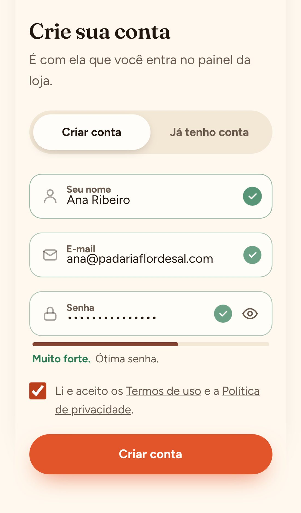
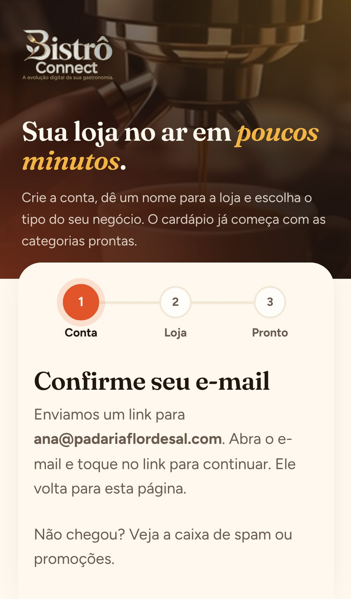
Dá um nome (o endereço /l/nome-da-loja aparece sozinho e mostra se está livre), escolhe o tipo de negócio e informa o WhatsApp. O tipo define o visual (tema) e as categorias iniciais.
Ele recebe o link, com botão para copiar, e a lista dos próximos passos. A vitrine já abre, mesmo vazia.
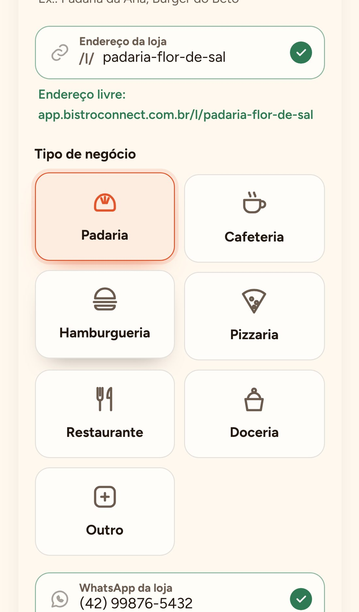
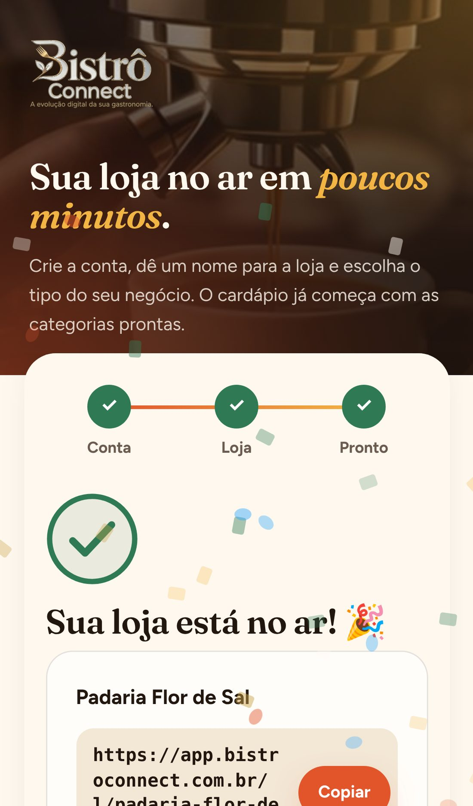
Abre /painel/ com o mesmo e-mail e senha. No primeiro acesso, lê um QR code com um aplicativo autenticador (Google Authenticator, Authy) e digita o código de 6 números. É obrigatório e protege a loja.
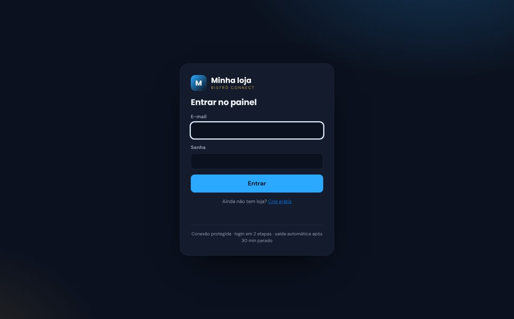
Enviar o logo, cadastrar 3 produtos, colocar fotos, definir horário e entrega, divulgar o link. Quem não tem produtos pode tocar em Usar exemplo com fotos: a loja ganha de 12 a 19 produtos do tipo dela, com preço, descrição e foto, e o dono só troca pelos dele.
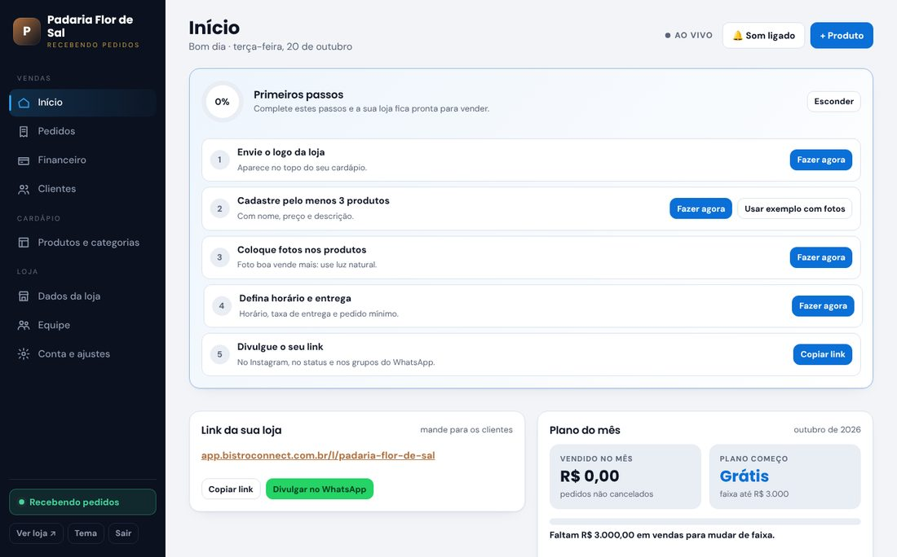
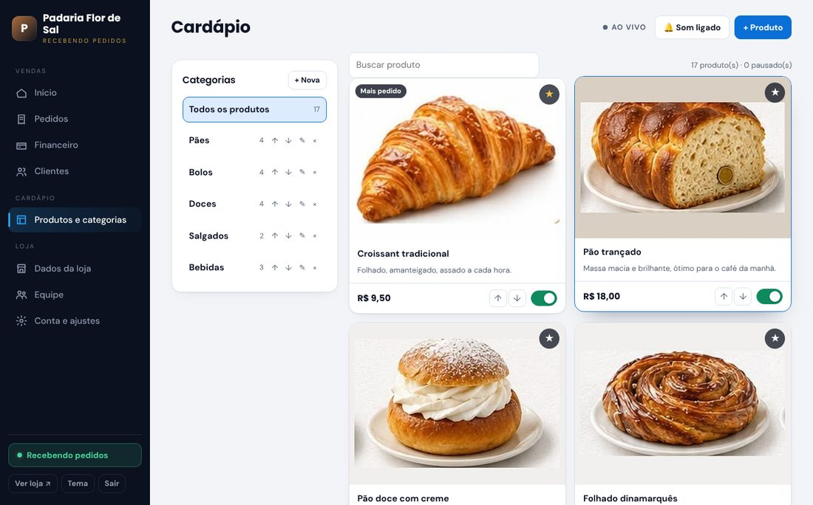
Na tela inicial ele copia o link da loja ou divulga direto no WhatsApp. O link vai para a bio do Instagram, o perfil do Google e o status do WhatsApp.
Por trás O guia Primeiros passos marca esse item como feito quando ele copia o link.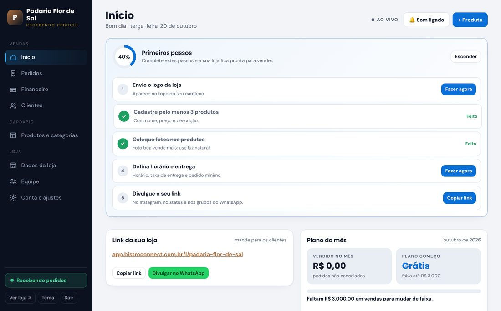
Abre o link no celular, escolhe os itens, informa nome e WhatsApp, entrega ou retirada, endereço e forma de pagamento, e toca em Enviar pedido.
Por trás O preço é recalculado no servidor (taxa, pedido mínimo, formas de pagamento da loja), então ninguém altera valor pelo navegador. Há proteção contra robôs e contra clique duplo.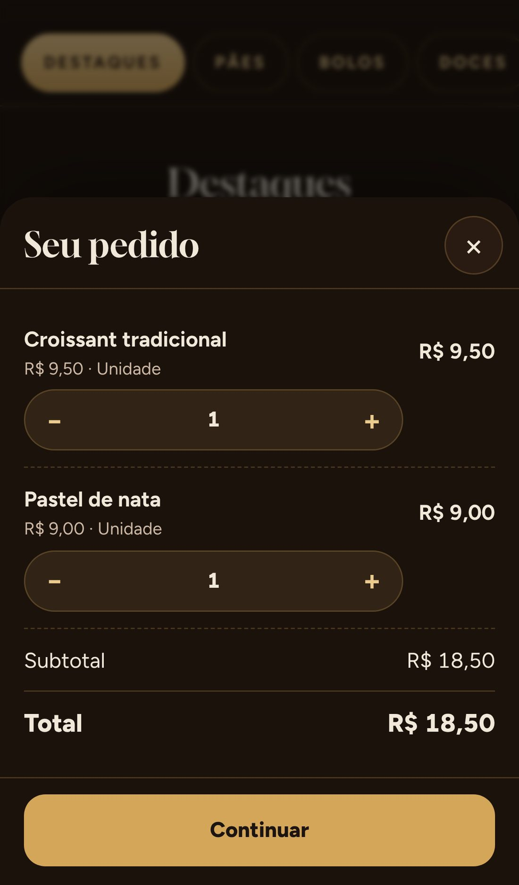
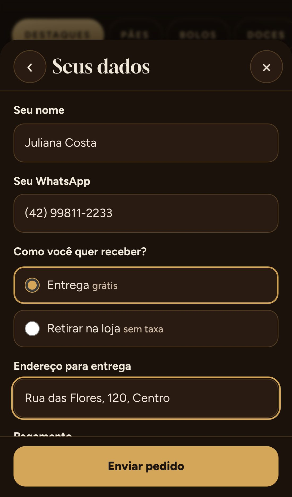
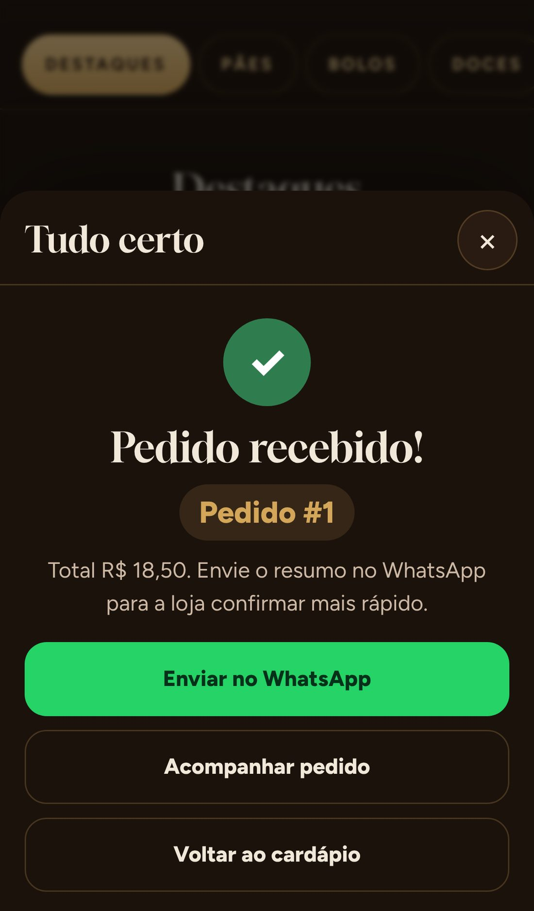
O pedido sempre fica salvo no painel do lojista, com alerta sonoro e notificação, mesmo que o cliente não envie nada. Em seguida o celular dele abre o WhatsApp com o resumo pronto, mas é o cliente quem toca em enviar. Por isso, nos anúncios, prefira “pedido organizado no painel e no WhatsApp” a “o pedido sempre chega no seu WhatsApp”.
O pedido aparece em Pedidos, na coluna Novos, com som e aviso. Ele toca em Confirmar e vai avançando: Em preparo, Pronto ou saiu para entrega, Entregue. O botão verde abre o WhatsApp do cliente com a mensagem de cada etapa e o link de acompanhamento.
Por trás Cada mudança de status fica registrada com quem fez. A equipe não consegue alterar itens nem valores de um pedido.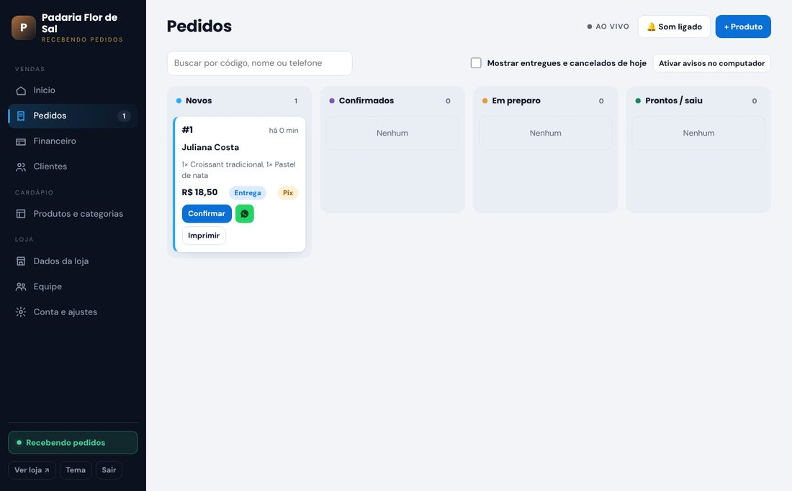
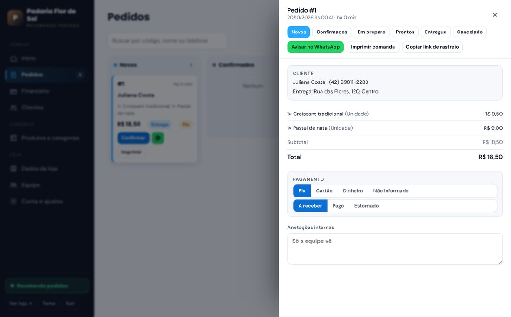
Ele abre o link de rastreio e vê as etapas: recebido, confirmado, em preparo, saiu para entrega, entregue. A página atualiza sozinha.
Por trás O link usa um código secreto de 64 caracteres e não mostra telefone nem endereço do cliente.No começo do mês seguinte, o plano da loja é definido pelo que ela vendeu pela plataforma (pedidos não cancelados). Em até R$ 3 mil é grátis. O dono vê no painel, em Plano do mês, quanto já vendeu e quanto falta para mudar de faixa.
Por trás Cobrança: capítulo 05.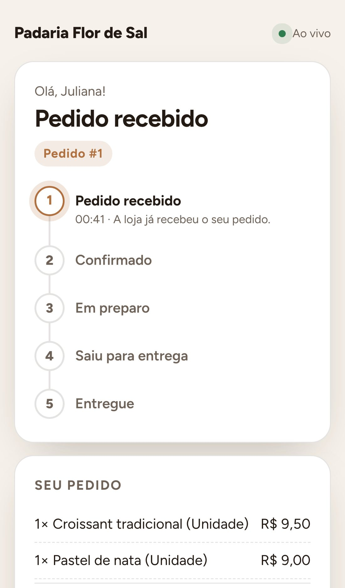
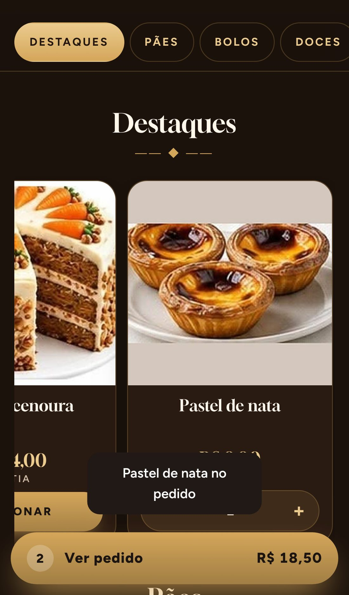
O lead pode fazer sozinho ou pedir ajuda. As duas chegam ao mesmo produto.
| Porta A · Sozinho | Porta B · “Quero ajuda para montar” | |
|---|---|---|
| Onde começa | Botão “Criar minha loja grátis” | Formulário da página de vendas, ou o assistente Bia |
| O que acontece | Cria conta e loja em minutos, sem falar com ninguém | O lead cai no seu painel /crm/, com a origem do anúncio, e o WhatsApp abre com os dados dele |
| Quem faz | O dono | O dono, com você guiando |
| Custo | Grátis até R$ 3 mil de vendas | Igual, mais a ajuda, se você cobrar implantação |
O lead chega no /crm/ e no seu WhatsApp. Responder em poucos minutos, em horário comercial, faz muita diferença na conversão.
O dono cria a conta na frente de você, escolhe o tipo, usa “Exemplo com fotos” e troca os primeiros produtos.
No painel dele: Equipe › Convidar pessoa, com o seu e-mail e a função Gerente. Você aceita pelo link e entra na loja dele com a sua própria conta (que precisa ter o login em 2 etapas). Terminado, ele remove o seu acesso em Equipe.
Logo, 3 produtos com foto, horário e taxa de entrega, divulgar o link no Instagram e no status do WhatsApp.
Use sempre o convite de gerente. Hoje não existe criar a loja “em nome” do cliente nem transferir uma loja de uma conta para outra, por segurança.
Você tem três lugares para acompanhar o negócio.
| Onde | Para quê |
|---|---|
/admin/ | Suas lojas. Todas as lojas, dono, data de criação, origem (qual anúncio trouxe), pedidos e vendas do mês, plano, mensalidade e situação. Tem seletor de mês e botão Exportar (planilha). |
/crm/ | Seus leads. Pedidos de ajuda do formulário e da Bia, orçamentos, funil de vendas e metas. Usa o mesmo banco e o mesmo login da plataforma. |
| Supabase › Authentication › Users | Contas. Quem se cadastrou, se confirmou o e-mail, e as ações de suporte (confirmar usuário, remover). |
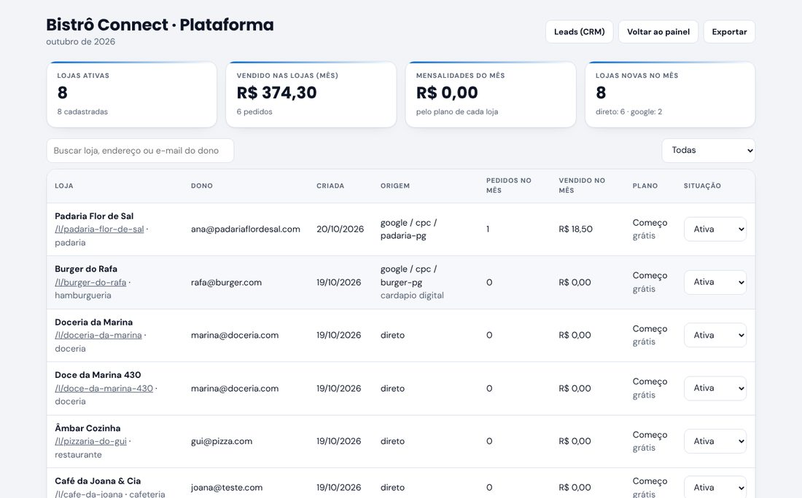
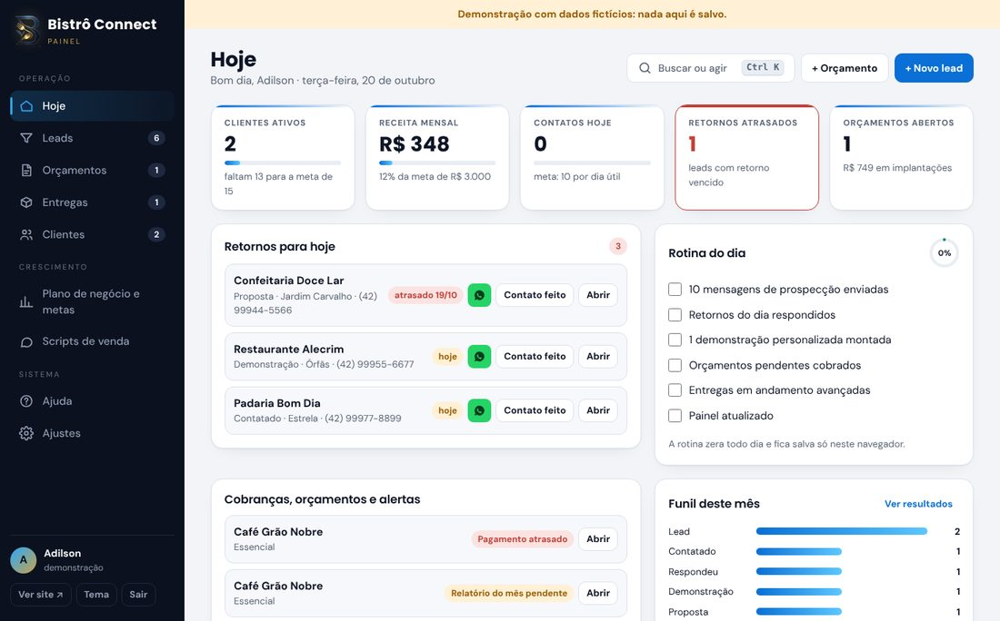
Na coluna Origem do /admin/ aparece, por exemplo, google / cpc / padaria-pg. Cruze com o que você gastou em cada campanha e corte as que não trazem lojas.
Hoje a cobrança é manual e leva uns 10 minutos por mês. A automática (Asaas) é a próxima fase.
Em /admin/, escolha o mês anterior no seletor. A tela mostra a venda de cada loja e a mensalidade que cabe. Toque em Exportar para guardar a planilha.
02-admin-por-mes.sql uma vez no Supabase.Lojas no plano Começo (mensalidade zero) não pagam nada. Para as demais, mande a cobrança por WhatsApp, com a sua chave Pix, vencendo no dia 10.
Para quem não pagou, um lembrete curto e simpático.
Em /admin/, mude a Situação da loja para Suspensa. A vitrine sai do ar e o cardápio fica oculto, mas nada é apagado. Quando pagar, volte para Ativa.
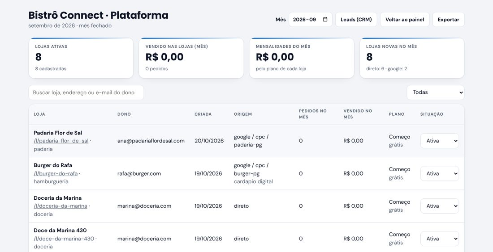
Converse com o seu contador sobre como emitir a nota da mensalidade e sobre o enquadramento. Isso depende de você ter CNPJ e do regime da empresa, e eu não consigo decidir por você.
| Cenário | Lojas pagantes | Receita mensal |
|---|---|---|
| Começando | 10 lojas no plano de R$ 49 | R$ 490 |
| Crescendo | 10 de R$ 49 + 15 de R$ 99 + 5 de R$ 199 | R$ 2.970 |
Fora isso, o serviço de implantação e os sites completos entram à parte. Os custos fixos principais são o Supabase Pro (cerca de US$ 25 por mês, ver capítulo 08), a hospedagem e o domínio.
Com uma conta Asaas (precisa de CNPJ), a assinatura mensal passa a ser gerada pela faixa de vendas do mês, o aviso de vencimento sai sozinho e a loja é suspensa automaticamente por falta de pagamento. Vale fazer quando você passar de umas 10 lojas pagantes: antes disso a cobrança manual é mais simples.
Teste os três papéis antes de vender: o dono da loja, o cliente final e você. Reserve uma hora.
Com Gmail, seunome+loja1@gmail.com e seunome+loja2@gmail.com contam como e-mails diferentes para o sistema, mas chegam todos na sua caixa. O mesmo aplicativo autenticador guarda quantas contas você quiser.
/painel/ e toque em Ver demonstração com dados fictícios. Chegam pedidos falsos sozinhos para você ver o alerta./crm/ e toque em Ver demonstração./l/nome-da-loja) e adicione um item.seunome+loja1@gmail.com. Esperado: tela “Confirme seu e-mail”./painel/ e ative o login em 2 etapas. Esperado: abre o painel, com “Primeiros passos”.seunome+loja2@gmail.com como Atendente e aceite o convite em outro navegador./painel/ e depois em /admin/. Esperado: a lista mostra Loja Teste 1, com origem e vendas.?para=padaria&utm_source=teste&utm_campaign=t1, crie outra conta e confira a origem no /admin/./crm/ e WhatsApp aberto.Em /admin/, mude a loja para Cancelada. Para apagar de vez, no SQL Editor do Supabase:
delete from public.lojas where slug = 'loja-teste-1';
Apaga a loja e tudo que é dela (produtos, pedidos, equipe). Depois, em Authentication › Users, apague o usuário de teste.
Então a jornada está pronta para vender. Se algo falhar, anote em qual passo e me mande um print.
O que os clientes mais vão perguntar e o que fazer.
| O cliente diz | O que fazer |
|---|---|
| “Esqueci a senha” | Na tela de entrar, ele toca em Esqueci a senha, digita o e-mail e recebe o link para criar outra. |
| “O e-mail de confirmação não chegou” | Veja spam e promoções. Se não chegar em alguns minutos, no Supabase abra Authentication › Users, ache o e-mail, toque nos três pontinhos e escolha Confirm user. Se acontecer com todo mundo, falta o SMTP (capítulo 09). |
| “Perdi o celular do código de 2 etapas” | No Supabase, em Authentication › Users, abra o usuário e remova os fatores de autenticação (confira o nome exato da opção na tela). No próximo acesso ele configura de novo. |
| “Quero trocar logo, capa ou cor” | Painel › Dados da loja. A foto é reduzida automaticamente. |
| “O pedido não chegou no meu WhatsApp” | O pedido sempre fica em Pedidos no painel. A mensagem do WhatsApp só sai se o cliente tocar em enviar. |
| “Um item acabou” | Painel › Produtos e categorias, e desligue a chave do item. Ele some da vitrine na hora. |
| “Quero cancelar” | Sem fidelidade e sem multa. Mude a Situação para Cancelada em /admin/. Se pedir, exporte os dados antes. |
| “Posso usar meu domínio?” | Ainda não na plataforma: a loja fica em bistroconnect.com.br/l/nome. Domínio próprio é o serviço de site completo. |
| “Quem vê meus dados?” | Só quem está na equipe da loja. Os dados dos clientes não são vendidos nem compartilhados. Veja a Política de privacidade. |
A pergunta é boa, e a resposta curta é: não, e não vale a pena tentar.
Páginas, imagens, domínio, certificado de segurança (SSL) e e-mails. Entrega os arquivos do site para muita gente ao mesmo tempo, sem esforço.
Contas e senhas, login em 2 etapas, lojas, cardápios, pedidos em tempo real, fotos enviadas e a separação entre uma loja e outra.
A Hostinger aguenta o site, inclusive com milhares de visitas por dia. O que nenhuma hospedagem comum faz sozinha é guardar cadastros, logins e pedidos com segurança. Isso é papel do banco de dados, e é o que o Supabase entrega pronto.
Tecnicamente dá, mas não seria “trocar o Supabase”. Seria construir um sistema novo, porque hoje o Supabase faz por nós:
São semanas ou meses de trabalho, e depois você passa a ser responsável por corrigir qualquer falha de segurança, com dados de clientes dentro. A hospedagem compartilhada também limita processos simultâneos e memória por conta, e o horário de almoço junta muitos pedidos ao mesmo tempo.
Manter Hostinger para o site e Supabase para o banco. Cada um faz o que faz melhor, e o custo é baixo.
| Gratuito | Pro (cerca de US$ 25/mês) | |
|---|---|---|
| Banco de dados | 500 MB | 8 GB |
| Fotos e arquivos | 1 GB | 100 GB |
| Tráfego por mês | cerca de 5 GB | cerca de 250 GB |
| Pausa por falta de uso | Sim, após cerca de 1 semana sem acesso | Não |
| Backup diário | Não | Sim |
| Serve para | Testes e as primeiras lojas | Dezenas a centenas de lojas pequenas (estimativa) |
Valores aproximados. Confirme os números atuais em supabase.com/pricing antes de decidir.
Pedidos são só texto e ocupam pouco. O que pesa é foto e a quantidade de visitas à vitrine. O painel reduz as fotos de produto para no máximo 900 px antes de enviar (cerca de 60 a 100 KB cada), e o navegador guarda a foto por 1 ano, então quem volta à vitrine quase não gasta tráfego.
No dia em que o primeiro cliente começar a pagar. O plano gratuito pausa o projeto após uma semana sem uso e não tem backup diário. Com clientes pagando, isso não é aceitável. Três lojas no plano de R$ 49 já cobrem a mensalidade do Pro, dependendo do câmbio.
Se um dia a plataforma tiver centenas de lojas e você quiser controlar tudo, existe a opção de instalar o próprio Supabase num servidor virtual (VPS) da Hostinger. Dá certo, mas você assume atualizações, backups e segurança. Só faz sentido com escala grande.
Marque cada item. Os três primeiros destravam o resto.
02-admin-por-mes.sql no SQL Editor do Supabase da plataforma (ativa o seletor de mês para cobrança).config.js da plataforma: WhatsApp de suporte e dados da empresa (razão social, CNPJ, e-mail, cidade), que aparecem nos Termos e na Privacidade.03-crm.sql no SQL Editor do Supabase da plataforma: cria as tabelas do /crm/ (leads, orçamentos e metas) no mesmo banco e com o mesmo login. Depois disso o formulário da página de vendas grava os leads ali.config.js.Com tudo marcado, você pode ligar os anúncios. Comece com um orçamento pequeno por nicho, acompanhe a coluna Origem do /admin/ e dobre o que funciona.